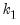
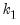

One obvious approach to robust regression replaces squaring of residuals in Equation (33.1) with a function that provides less weight to outliers. The Huber M-estimator (“M” for “maximum likelihood estimator-like”) computes the coefficient values that minimize the summed values of a function

of the residuals:
where  is a measure of the scale of the residuals,
is a measure of the scale of the residuals,  is an arbitrary positive tuning constant
is an arbitrary positive tuning constant associated with the function, and where

are individual weights that are generally set to 1, but may be set to:
Since  is not known, a sequential procedure is used that alternates between: (1) computing updated estimates of the scale given coefficient estimates , and (2) using iterative methods to find the
is not known, a sequential procedure is used that alternates between: (1) computing updated estimates of the scale given coefficient estimates , and (2) using iterative methods to find the  that solves Equation (33.5)
that solves Equation (33.5) for a given . The initial are obtained from ordinary least squares. The initial coefficients are used to compute a scale estimate, , and from that are formed new coefficient estimates , followed by a new scale estimate , and so on until convergence is reached.
The deviance is the value of the objective function Equation (33.3) evaluated at the final coefficient estimates and estimate of the scale:
The MM-estimator first computes S-estimates of the coefficients and scale, then uses the estimate of the scale as a fixed value in iterating to find a solution to Equation (33.5). The second stage M-estimation in EViews uses the Bisquare function with a default tuning parameter value of 4.684 which gives 95% relative efficiency for normal errors (Yohai, 1987).


enter the objective function on the right-hand side of Equation (33.1) after squaring, the effects of outliers are magnified accordingly.
One obvious approach to robust regression replaces squaring of residuals in Equation (33.1) with a function that provides less weight to outliers. The Huber M-estimator (“M” for “maximum likelihood estimator-like”) computes the coefficient values that minimize the summed values of a function, where
, the derivative of the function, and
is the value of the j-th regressor for observation
.
Sincethat provide the smallest estimate of the scale
such that:

refinements to the initial coefficient estimates using a variant of M-estimation which takes a single step toward the solution of Equation (33.5) at every update. These modified M-estimate refinements employ the Bisquare function
with tuning parameter and scale estimator
 is given by
is given by (Andrews, Bisquare, Cauchy, Fair, Huber-Bisquare, Logistic, Median, Talworth, Welsch) are outlined below along with the default values of the tuning constants:
(Andrews, Bisquare, Cauchy, Fair, Huber-Bisquare, Logistic, Median, Talworth, Welsch) are outlined below along with the default values of the tuning constants:
 is known, then the
is known, then the  -vector of coefficient estimates may be found using standard iterative techniques for solving the
-vector of coefficient estimates may be found using standard iterative techniques for solving the  nonlinear first-order equations:
nonlinear first-order equations: and where the initial scale required for the Huber method is estimated by:
and where the initial scale required for the Huber method is estimated by: statistic as
statistic as is the M-estimate from the constant-only specification.
is the M-estimate from the constant-only specification. is calculated as:
is calculated as: to be a better measure of fit than the robust
to be a better measure of fit than the robust  outlined above. The
outlined above. The  statistic is defined as
statistic is defined as , an adjusted value of may be calculated from the unadjusted statistic
, an adjusted value of may be calculated from the unadjusted statistic statistic is a robust version of a Wald test of the hypothesis that all of the coefficients are equal to zero. It is calculated using the standard Wald test quadratic form:
statistic is a robust version of a Wald test of the hypothesis that all of the coefficients are equal to zero. It is calculated using the standard Wald test quadratic form: are the  non-intercept robust coefficient estimates and
are the  non-intercept robust coefficient estimates and  is the corresponding estimated covariance. Under the null hypothesis that all of the coefficients are equal to zero, the
is the corresponding estimated covariance. Under the null hypothesis that all of the coefficients are equal to zero, the  statistic is asymptotically distributed as a .
statistic is asymptotically distributed as a . as outlined in Holland and Welsch (1977). See Ronchetti (1985) for details.
as outlined in Holland and Welsch (1977). See Ronchetti (1985) for details. is taken to be with
is taken to be with  the standard normal. The breakdown value
the standard normal. The breakdown value  for this estimator is .
for this estimator is . using the Median Absolute Deviation, Zero Centered (MADZERO) method.
using the Median Absolute Deviation, Zero Centered (MADZERO) method. affects the objective function through and
affects the objective function through and  .
.  is typically chosen to achieve a desired breakdown value. EViews defaults to a
is typically chosen to achieve a desired breakdown value. EViews defaults to a  value of 1.5476 implying a breakdown value of 0.5. Other notable values for
value of 1.5476 implying a breakdown value of 0.5. Other notable values for  (with associated
(with associated  ) are:
) are: 

 from the data and compute the least squares regression to obtain a . By default
from the data and compute the least squares regression to obtain a . By default  is set equal to
is set equal to  , the number of regressors. (Note that with the default , the regression will produce an exact fit for the subsample.)
, the number of regressors. (Note that with the default , the regression will produce an exact fit for the subsample.) is the breakdown value defined earlier.
is the breakdown value defined earlier. by iterating
by iterating  in place of
in place of  ) to convergence or until .
) to convergence or until .  times. The best (smallest)
times. The best (smallest)  scale estimates are refined using M-estimation as in Step 2 with (or until convergence). The smallest scale from those refined scales is the final estimate of
scale estimates are refined using M-estimation as in Step 2 with (or until convergence). The smallest scale from those refined scales is the final estimate of  , and the final coefficient estimates are the corresponding estimates of
, and the final coefficient estimates are the corresponding estimates of  .
. for S-estimation is given by:
for S-estimation is given by: .
.